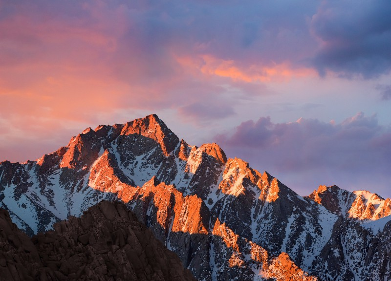
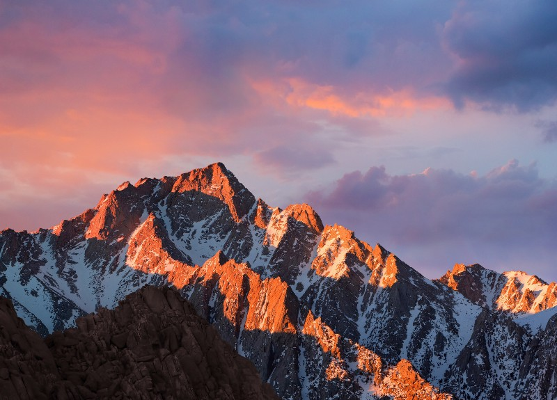

The desktop wallpaper has greeted computer users since the beginning of the computer monitor. Through development of display technologies, the desktop wallpaper has shifted from a single color, to a tiled image, to full color photographs and dynamic animations.

The most recognizable of the desktop wallpapers is Bliss, preloaded onto the long-lasting and popular Windows XP operating system. Taken in 1996 by Charles O'Rear, it rose to prevalence in 2000 when Microsoft purchased the rights to the photograph from stock image site Corbis. It is immediately associated with the rise of the personal computer, leading many to consider it the most viewed photograph of the 21st century.
The actual location of Bliss.
In present day, the location is unrecognizable.
Bliss has become so recognizable it has reached cultural icon status, resulting in memes and a bunch of merch you can buy on redbubble.
The desktop wallpaper has existed in some form since the creation of visual displays for computers. Granted, for many of those early years the "wallpaper" was really just a single color background. The first Macintosh system allow for the use of small tiled patterns as backgrounds, with color patterns arriving in 1987. Mac System 8 in 1997 was the first appearance of images, rather than patterns, as background wallpapers. Apple then began to include a selection of default wallpapers loaded in with their operating systems, introducing a new wallpaper with each release. These wallpapers then became synonymous with the operating system they were attached to, and changed in theme over time. Apple began with abstract blue shapes with OS X 10.0 through 10.4 Tiger, but with 10.5 Leopard introduced a series of Space-themed default wallpapers. After running the course with cat themed names for 10.9, Apple began to theme their operating system names and default wallpapers around Apple's headquarters in California, starting with Mavericks and on through Sierra.

 

The desktop wallpapers on Microsoft have morphed over the years from a single color to vivid and dynamic photographs. Due to its large presence in households, schools, and workplaces for such a long period of time, the default wallpapers included with Windows XP appear to have particular nostalgic factors. Windows XP also was home to the embrace of the customizable desktop wallpaper.


Communities such as Deviant Art worked to create custom wallpapers for fandoms or organizational function. Many users used personal photographs for their backgrounds as well. The desktop wallpaper became an iconic part of the personal computing experience, allowing unique customization and peronalization of the computer. While default wallpapers persisted following Windows XP, their use by users has likely declined in favor of custom wallpapers or at the very least, selecting from a group of provided photos rather than the default Microsoft Window wallpaper. Microsoft has also stepped away from the traditional desktop and towards their tile system of organization in their newest OSes.